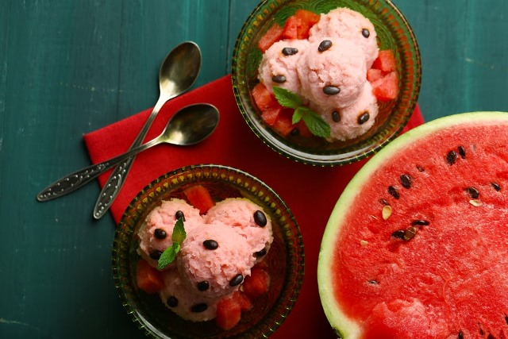

Інгредієнти для «Кавунне морозиво»:
- Молоко - 200 мл
- Вершки (33-35%) - 200 мл
- Кавун (без кісточок) - 150 г
- Жовток яєчний - 3 шт
- Цукор - 75 г
- Сік лимонний – 1 ст. л.
- Ванілін - за смаком
Жовтки змішайте із цукром та ваніліном.
Влийте гаряче молоко, постійно помішуючи вінчиком. Поставте суміш на вогонь і доведіть до кипіння (або поки від маси не почне підніматися пара), зніміть з вогню.
